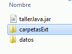
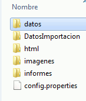
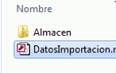
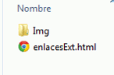
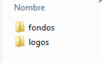
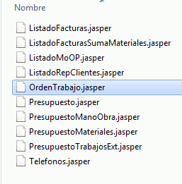

Descripción e Inicio
TallerJava es un aplicación para la gestión de un pequeño
taller de reparación genérico, autoinstalable y configurable por el usuario.
El ejecutable tallerJava testea la existencia de la carpeta "trabajosExt", y si
no existe, bien por ser la primera instalacción, o porque el usuario desea rehacerla y la
ha borrado previamente, la crea junto con su
estructura de archivos, con valores predeterminados.
Breve descripción de las pestañas existentes:
Cinco pestañas básicas y de lógica idéntica
Muestran un listado de su tabla respectiva, con opciones de búsqueda por
campo o bien por inicio de cadena al ir tecleando caracteres o subcadena al
pulsar "Enter" en el cuadro de búsqueda.
Pulsando sobre una línea se edita el registro.
Igual en la operativa básica (pestañas arriba mencionadas) pero con un formulario de edición más complejo, con algunas pestañas internas de funcionamiento intuitivo.
Cinco pestañas más:
Importante para el funcionamiendo del programa, intuitiva y de un uso
practicamente limitado al primer arranque del programa.
Se personaliza con los datos de la empresa, las rutas de los logos, informes
y aplicaciones externas a utilizar.
Unos botones para importar algunos datos y uno para inicializar el programa.
Muestra datos estadísticos, de totales facturación-meses-años y Mano de Obra
por Operario Fecha.
También desde esta pestaña se imprimen los listados Facturas ,
Horas-Operarios y Reparaciones-Cliente filtrados por fechas.
Cuatro accesos:
Controla la caja, se enlaza directamente desde reparaciones al imprimir una factura.
Un acceso a un documento html externo configurable por el usuario con los link más habituales.
Cuando el foco esta en en el panel de "Notas", pulsando F1 se muestra un formulario para el control de las horas de trabajo de los trabajadores dados de alta
Estructura de archivos
|  |
|
|  | Al desplegar catpetasExt, obtenemos el árbol de la imagen, que se
describe:
|
|  | Al desplegar DatosImportación, obtenemos el árbol de la imagen, que se desctibe:
|
|  | Al desplegar html, obtenemos el árbol de la imagen, que se
describe: Un documento tipo sencillo para que el usuario lo modifique según sus preferencias con un editor de codigo HTML |
|  | Al desplegar Imágenes, obtenemos el árbol de la imagen, que se
desctibe:
|
|  | Al desplegar informes, obtenemos el árbol de la imagen, que se
describe:
|